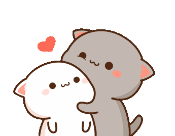

Reasons I Love You
- Personality:
- I don't think it needs to be said, but I'm going to do it anyway. You are more than just a pretty face hehe,
I am in love with the way you act and carry yourself. You are so smart, I wish I was as smart and hard-working as you.
You are also pretty funny. I know you've mentioned to me how you've been insecure about how you might be boring, but I couldn't
disagree more. Time passes by so quickly because of how much fun I have when I am with you.
- Supportive Nature:
- Sometimes I have doubts about my future but you are always there to lift up my spirits and motivate me
to try my hardest. Your support is not just a source of strength, but it's the assurance that, no matter what challenges lie ahead,
I have a partner who believes in me. It's one of the reasons I haven't given up yet.
- Interests:
- We have a lot of shared interests that we both enjoy, mainly anime. However, even with our interests that we don't share,
you put an effort to learn about them. Like for example, I didn't expect you to watch Yu-Gi-Oh, one of my childhood shows, but you
still watched it anyway. I also enjoy watch JoJo's Bizzare Adventure with you, even though I kind of forced you to watch it lol. Even
myself, I never would have thought I would be able to name all the BTS members.
- Communication:
- I'd be lying if I said we didn't have our rough patches, but we always try our best to work with our problems. Even now
we are not perfect at it, but we still try to communicate with each other when there is something that is bothering us. I also want to
thank you for being so patient with me. I know I can be stupid, but I am genuinely so grateful to have you in my life, I try to improve
myself so that you have the boyfriend that you deserve.
- Trust:
- I have told you several things I have never told anyone, many of those things aren't even about me lol. Whenever I hear some interesting
gossip or whatever, you are the first and only person I tell. I trust you 100% with anything and everything, maybe this is part of the
reasons I've never really gotten jealous with other dudes or insecure that you are talking with someone else.
- Physical Attraction:
- Hope I don't sound shallow by talking about how beautiful you are lol. I feel fortunate every day to be with
someone whose inner and outer beauty leave me in awe. It's just another reason why I'm head over heels for you. Every time we go out
on a proper date, I look forward to see how you dressed yourself. I am not exaggerating when I say I have saved every single photo
that you have ever sent me, I have an album with 2000+ photos of you/us.
